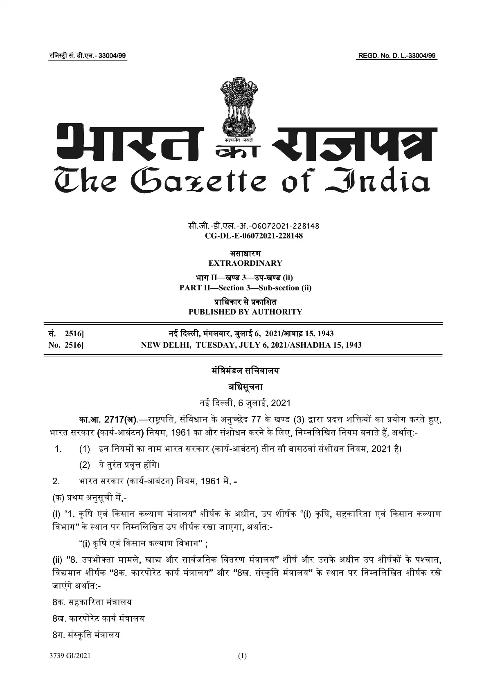
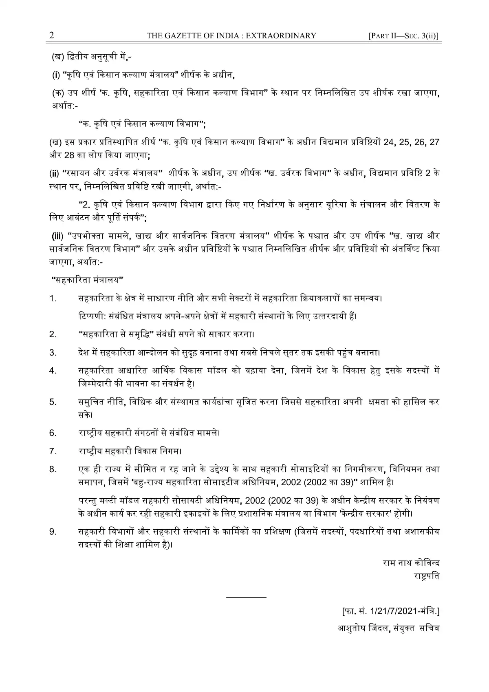
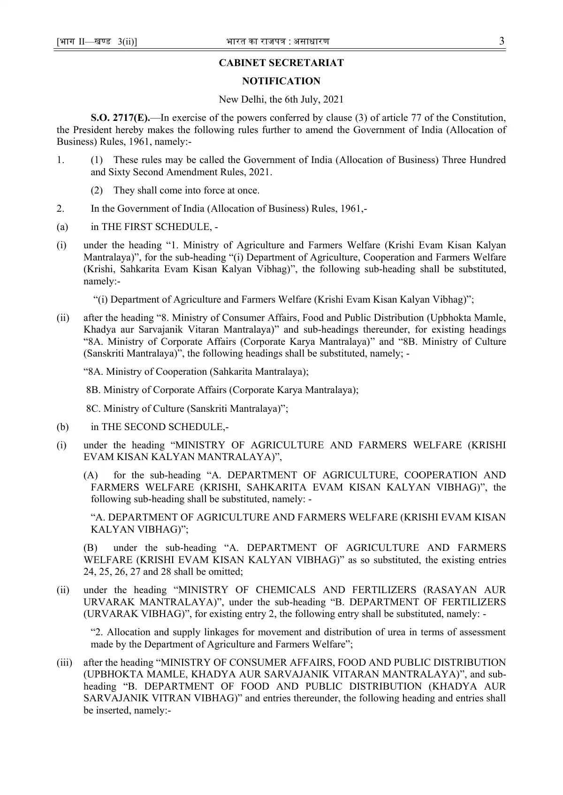
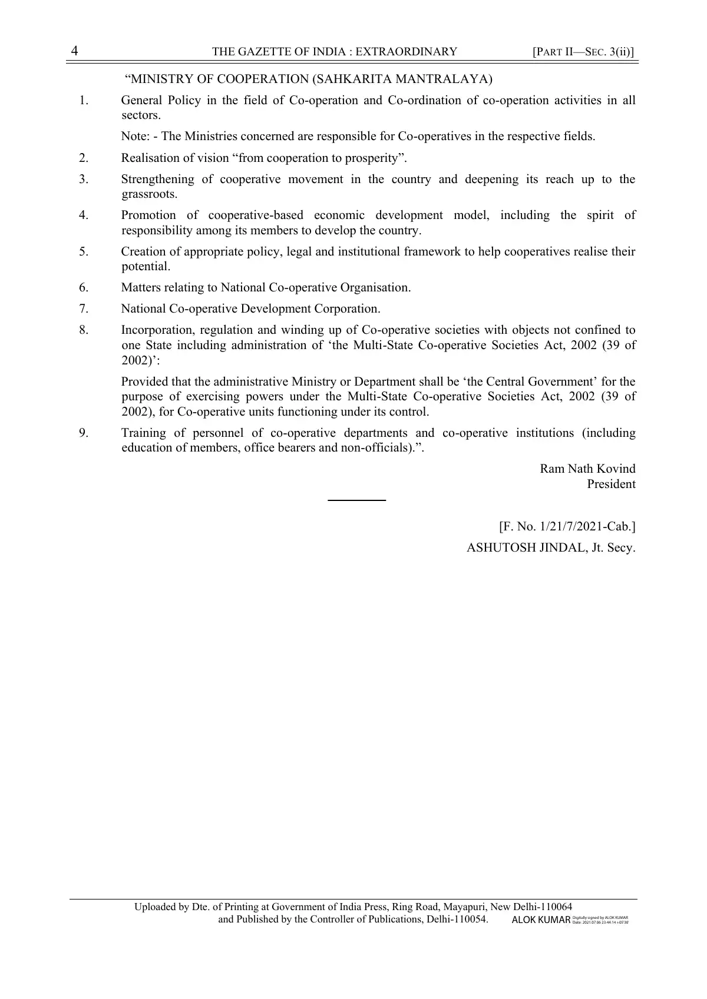

Amendment #362 (S.O. 2717(E), 2021)
6 changes: 2 to the First Schedule, 4 to the Second Schedule. 6 applied
What it did to the ministries
- spun offA new Ministry of Cooperation is carved out of Agriculture. change 1, 2, 3, 4 · histories: Agriculture, Cooperation
The order, page by page
Page 1 of 4

Page 2 of 4

Page 3 of 4

123456Schedule 1 › Ministry of Agriculture and Farmers Welfare › Department of Agriculture, Cooperation and Farmers Welfare
- i. Department of Agriculture and Farmers Welfare
applied at schedule 1 › ministry 1 › department i in the Rules after #362
Schedule 1 › Ministry of Corporate Affairs; Schedule 1 › Ministry of Culture
- 8A. Ministry of Cooperation
- 8B. Ministry of Corporate Affairs
- 8C. Ministry of Culture
applied at schedule 1 › ministry 8A in the Rules after #362
Schedule 2 › MINISTRY OF AGRICULTURE AND FARMERS WELFARE › DEPARTMENT OF AGRICULTURE, COOPERATION AND FARMERS WELFARE
- A. DEPARTMENT OF AGRICULTURE AND FARMERS WELFARE
applied at schedule 2 › ministry MINISTRY OF AGRICULTURE AND FARMERS WELFARE › department A in the Rules after #362
Schedule 2 › MINISTRY OF AGRICULTURE AND FARMERS WELFARE › DEPARTMENT OF AGRICULTURE AND FARMERS WELFARE › entry 24; Schedule 2 › MINISTRY OF AGRICULTURE AND FARMERS WELFARE › DEPARTMENT OF AGRICULTURE AND FARMERS WELFARE › entry 25; Schedule 2 › MINISTRY OF AGRICULTURE AND FARMERS WELFARE › DEPARTMENT OF AGRICULTURE AND FARMERS WELFARE › entry 26; Schedule 2 › MINISTRY OF AGRICULTURE AND FARMERS WELFARE › DEPARTMENT OF AGRICULTURE AND FARMERS WELFARE › entry 27; Schedule 2 › MINISTRY OF AGRICULTURE AND FARMERS WELFARE › DEPARTMENT OF AGRICULTURE AND FARMERS WELFARE › entry 28
applied at schedule 2 › ministry MINISTRY OF AGRICULTURE AND FARMERS WELFARE › department A › part III › entry 24 in the Rules after #362
Schedule 2 › MINISTRY OF CHEMICALS AND FERTILIZERS › DEPARTMENT OF FERTILIZERS › entry 2
- 2. Allocation and supply linkages for movement and distribution of urea in terms of assessment made by the Department of Agriculture and Farmers Welfare
applied at schedule 2 › ministry MINISTRY OF CHEMICALS AND FERTILIZERS › department B › entry 2 in the Rules after #362
after Schedule 2 › MINISTRY OF CONSUMER AFFAIRS, FOOD AND PUBLIC DISTRIBUTION › DEPARTMENT OF FOOD AND PUBLIC DISTRIBUTION
- MINISTRY OF COOPERATION
- 1. General Policy in the field of Co-operation and Co-ordination of co-operation activities in all sectors.
- Note: - The Ministries concerned are responsible for Co-operatives in the respective fields.
- 2. Realisation of vision “from cooperation to prosperity
- 3. Strengthening of cooperative movement in the country and deepening its reach up to the grassroots.
- 4. Promotion of cooperative-based economic development model, including the spirit of responsibility among its members to develop the country.
and 6 more
- 5. Creation of appropriate policy, legal and institutional framework to help cooperatives realise their potential.
- 6. Matters relating to National Co-operative Organisation.
- 7. National Co-operative Development Corporation.
- 8. Incorporation, regulation and winding up of Co-operative societies with objects not confined to one State including administration of „the Multi-State Co-operative Societies Act, 2002 (39 of 2002)‟:
- Provided that the administrative Ministry or Department shall be „the Central Government‟ for the purpose of exercising powers under the Multi-State Co-operative Societies Act, 2002 (39 of 2002), for Co-operative units functioning under its control.
- 9. Training of personnel of co-operative departments and co-operative institutions (including education of members, office bearers and non-officials).
applied at schedule 2 › ministry MINISTRY OF CONSUMER AFFAIRS, FOOD AND PUBLIC DISTRIBUTION › department B in the Rules after #362
read page break
Page 4 of 4

How this document was read
From the Government of India (Allocation of Business) Rules, 1961 and their amendments, as published by the Cabinet Secretariat (cabsec.gov.in), read by orgpedia. The readings of the older scanned gazettes have known gaps.